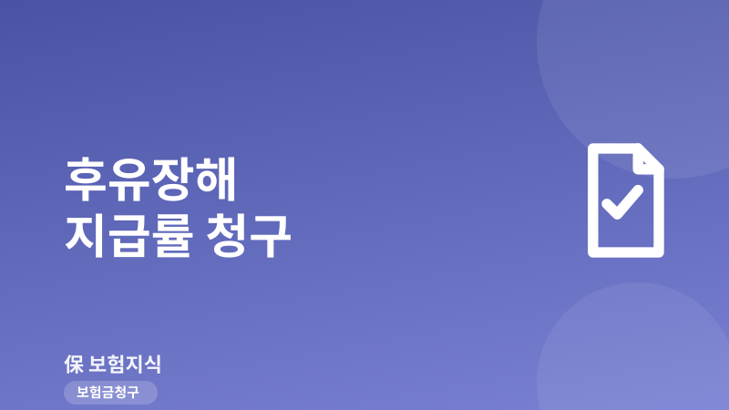
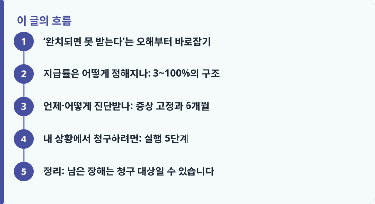

후유장해 보험금은 ‘가입금액 × 지급률(3~100%)’로 계산되며, 완치가 아니라 치료를 끝낸 뒤에도 남는 영구 장해를 봅니다.
보통 사고일로부터 6개월가량 지나 증상이 고정된 뒤 전문의의 후유장해진단서로 지급률을 확정합니다.
실제 지급률과 인정 여부는 약관 장해분류표와 의사 진단, 보험사 심사에 따라 달라질 수 있는 일반 정보입니다.
‘완치되면 못 받는다’는 오해부터 바로잡기
후유장해 보험금을 놓치는 가장 큰 이유는 ‘다 나았으니 받을 게 없다’는 오해입니다. 하지만 후유장해 담보가 보는 것은 ‘완치’가 아니라 치료를 다 한 뒤에도 몸에 남은 영구적 장해입니다. 즉 오히려 치료가 끝나 더 이상 좋아지기 어려운 상태가 되었을 때 판단합니다. 골절 수술 뒤 관절이 예전만큼 굽혀지지 않는다거나, 인대·신경 손상이 남아 힘이 빠지거나 감각이 둔해졌다면, 겉으로는 ‘나은 것’처럼 보여도 후유장해 대상이 될 수 있습니다.
대표적으로 관절의 운동범위 제한, 신경 손상으로 인한 마비·감각 저하, 얼굴이나 몸의 뚜렷한 흉터(추상장해), 한쪽 눈의 시력 저하나 실명, 한쪽 귀의 청력 상실 등이 모두 표준 장해분류표에 지급률이 정해져 있는 장해 유형입니다. 특히 골절이나 깁스 치료를 받았던 분이라면, 치료비 청구로 끝내지 말고 관절 기능이 얼마나 회복됐는지 반드시 점검해야 합니다. 관련해서 골절·깁스 보험금 청구 글을 함께 보면 치료 단계에서 놓치기 쉬운 부분을 짚을 수 있습니다.
지급률은 어떻게 정해지나: 3~100%의 구조
후유장해 보험금은 계산 구조가 단순합니다. 가입금액 × 지급률(%)이 지급액입니다. 지급률은 생명·손해보험 표준 장해분류표에서 신체 부위와 장해 정도별로 3%에서 100%까지 규정되어 있습니다. 예를 들어 상해후유장해 가입금액이 1억 원이고 지급률이 30%로 인정되면 3,000만 원이 지급되는 식입니다. 지급률이 클수록, 그리고 가입금액이 클수록 보험금이 커집니다.
표준 분류표 기준의 일반적인 예시를 들면, 한 팔이나 한 다리를 완전히 잃었을 때 60%, 한 다리의 3대 관절(고관절·무릎·발목) 중 하나가 완전히 강직(굳어서 못 움직임)되면 30%, 한 눈이 완전히 실명되면 50%, 한 귀의 청력을 완전히 잃으면 25%, 얼굴 등 외모에 뚜렷한 흉터가 남는 추상장해는 대략 5~15% 수준으로 정해져 있습니다. 다만 이 수치들은 이해를 돕기 위한 일반 예시이며, 정확한 지급률은 반드시 가입한 상품의 약관 장해분류표와 담당의의 진단에 따라 달라진다는 점을 기억해야 합니다.
하나의 사고로 여러 부위에 장해가 남으면 원칙적으로 각 부위의 지급률을 합산합니다. 다만 같은 부위에서 파생된 장해라면 더 높은 지급률 하나만 인정합니다. 또 사고 이전부터 이미 가지고 있던 장해(기왕장해)가 있으면 그 부분은 공제하고, 이번 사고로 악화된 부분만 인정합니다. 지급률을 두고 보험사와 이견이 생기기 쉬운 지점이 바로 이 합산과 기왕장해 공제 부분이라, 진단서에 어느 부위가 어떤 원인으로 남았는지 명확히 기재되는 것이 중요합니다. 예컨대 무릎 관절에 운동제한이 남았는데 이전 사고 기록이 있다면, 보험사는 그 부분을 기왕장해로 보고 이번 사고분만 떼어 인정하려 할 수 있습니다. 이때 ‘이번 사고 이전과 이후로 운동범위가 얼마나 달라졌는지’를 뒷받침하는 자료가 있으면 악화된 부분을 인정받는 데 유리합니다.

언제·어떻게 진단받나: 증상 고정과 6개월
후유장해는 아무 때나 진단하지 않습니다. 원칙적으로 증상이 고정된 후, 즉 치료가 끝나고 더 이상 호전을 기대하기 어려운 상태가 되어야 판단합니다. 실무에서는 보통 사고일로부터 6개월 정도가 지난 뒤 전문의가 발급하는 후유장해진단서로 지급률을 확정합니다. 아직 회복 중인데 서둘러 진단하면 지급률이 낮게 나오거나 인정이 어려울 수 있어, 시점을 잘 잡는 것이 중요합니다.
한편 영구적으로 남는 장해가 아니라 일정 기간이 지나면 회복이 예상되는 경우에는 한시장해로 인정되기도 합니다. 한시장해는 인정 기간과 비율이 약관 기준에 따라 별도로 정해지므로, 영구장해와 구분해서 진단서에 명시되어야 합니다. 진단서를 준비할 때 어떤 서류가 함께 필요한지 헷갈린다면 보험금 청구 서류 정리를 참고하면 누락을 줄일 수 있습니다.
또 하나 알아둘 점은, 상해후유장해와 질병후유장해 담보가 서로 구분된다는 것입니다. 교통사고나 낙상 같은 상해가 원인이면 상해후유장해, 뇌졸중 후유증처럼 질병이 원인이면 질병후유장해로 각각 청구합니다. 그리고 후유장해 보험금은 실제 치료비를 보전하는 실손보험과 성격이 다른 정액 보험금이라, 실손보험금을 받았더라도 중복해서 함께 받을 수 있습니다. 지급률이 높은 고도후유장해(예: 지급률 50% 또는 80% 이상)에 해당하면 이후 보험료 납입면제나 고도장해자금 같은 추가 보장이 붙는 상품도 있으니, 본인 증권의 담보 구성을 확인해 볼 만합니다.
작성·검수 기준
이 글은 특정 보험사 상품을 권유하기 위한 것이 아니라, 후유장해 보험금이 무엇이고 어떤 경우에 청구를 검토할 수 있는지 일반적인 기준을 설명하기 위해 작성했습니다. 본문의 지급률 예시(60%, 50%, 30%, 25%, 5~15% 등)와 6개월·증상 고정 같은 기준은 표준 장해분류표를 바탕으로 한 일반 정보이며, 실제 인정 여부와 정확한 지급률은 가입 상품의 약관 장해분류표, 담당의의 후유장해진단, 보험회사 심사에 따라 달라질 수 있습니다.
손해사정이나 현장조사 과정에서 지급률을 두고 다툼이 생길 수 있으므로, 정확한 대응이 필요하다면 본인 증권의 약관과 상품설명서, 그리고 손해사정·현장조사 대응 내용을 함께 확인하는 것이 안전합니다.
내 상황에서 청구하려면: 실행 5단계
후유장해가 놓치기 쉬운 이유는, 보험사가 먼저 ‘후유장해도 청구하시라’고 안내해 주는 경우가 드물고, 피해자 스스로 장해진단 자체를 받지 않는 경우가 많기 때문입니다. 그래서 남은 증상이 있다면 아래 순서로 직접 챙기는 것이 좋습니다.
- 치료가 마무리되고 증상이 더 이상 좋아지지 않는지(증상 고정) 확인합니다. 보통 사고일로부터 6개월가량 지난 시점이 기준입니다.
- 관절 운동범위 제한, 신경 손상, 흉터, 시력·청력 저하 등 남은 장해가 표준 장해분류표의 어느 항목에 해당하는지 대략 가늠해 봅니다.
- 담당의에게 ‘후유장해진단서’를 명확히 요청하고, 장해 부위·정도·원인이 구체적으로 기재되도록 합니다.
- 본인 증권에서 상해후유장해·질병후유장해 담보와 가입금액을 확인하고, 실손과 별개로 정액 청구가 가능한지 점검합니다.
- 보험사와 지급률에 이견이 있으면 제3의료기관 감정을 요청하거나, 금융감독원 분쟁조정(국번 없이 1332)을 활용해 대응합니다.
정리: 남은 장해는 청구 대상일 수 있습니다
후유장해 보험금은 ‘완치’를 기준으로 하는 것이 아니라, 치료가 끝난 뒤에도 몸에 남은 영구적 장해를 봅니다. 가입금액 × 지급률(3~100%)이라는 계산 구조를 이해하고, 증상이 고정된 6개월 무렵에 후유장해진단서를 준비하면, 그동안 몰라서 놓쳤을 수 있는 보험금을 되찾을 여지가 생깁니다. 사고 원인이 상해인지 질병인지에 따라 담보가 갈린다는 점도, 사망 담보에서 원인 구분이 중요한 것과 비슷하니 상해사망 vs 질병사망 글도 함께 보면 이해가 넓어집니다.
다른 보험 정보 글이 궁금하다면 보험지식 블로그에서 이어 읽어 보세요. 가입 전에는 반드시 약관과 상품설명서를 확인하는 것이 가장 안전한 방법입니다.